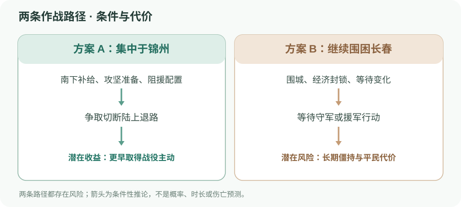

01 · 不把胜利看成预定结局
讲稿最值得保留的不是“三大战役纯属意外”的修辞，而是一个历史方法问题：结果已知，会不会掩盖当时可见的失败风险与信息不完备？ 1948年春，中共中央提出在东北封锁国民党军的陆上撤退通道；同时，东北野战军考虑首先夺取长春、以围城吸引沈阳援军。双方并非一个想胜利、一个拒绝胜利，而是在同一目标之下使用不同的风险模型。[S02][S14]
区分三个层级：战略目的是争取东北战场主动；战役路径是先打锦州还是长春；操作条件是攻坚能力、补给和阻援配置。前线是否延误可以讨论，但不应把整段时间概括为“六个月无所作为”：长春的试攻、围困、演训与交通保障均在进行，是否有效是另一个问题。[S02][S01]
“三大战役必然按既有蓝图展开”与“纯属偶然”同样是过度简化。更好的提问是：哪些节点有明确文件，哪些决定受现场情况调整，哪些结果只有在事后才显得不可避免？
02 · 从冬季攻势到锦州：节点证据
时间线记录有文献支持的决定与行动，不把“哪一位将领心里已经否决计划”写作确定事实。
03 · 为什么锦州是战略节点，而非普通城市
锦州的重要性来自其在东北通往关内陆路交通中的枢纽地位。打下长春有可能消灭一座孤城守军；切断锦州则可能让东北战场的多个国民党集团难以从陆上南撤。两者的战役收益范围不同，但锦州是坚固设防目标，又面临来自沈阳和锦西两个方向的援军威胁。[S01][S13]

路径 A｜集中于锦州
前提：南下补给与工程保障完成；有足够攻坚主力；可以分别阻击锦西和沈阳援军。收益：提前控制东北与关内的陆路联系，争取战役主动。风险：若攻城迟滞且援兵接近，攻城集团可能受双向威胁。[S03][S04]
路径 B｜继续围困长春
前提：围城能迫使守军投降或诱出援军；己方能够维持封锁与后方供给。收益：避免立即强攻锦州，并可能寻找局部歼敌机会。风险：国民党军可能不解围，主力被长期牵制，民众承受更久封锁。[S02][S07][S08]
关键不是用后来的结果“证明”任何一方从头到尾正确。10月3日19时的电报明确指出：即使先拿下长春，之后仍须解决两锦问题，且对方增援形势可能更复杂。4日的电报同时认可须待部队集中和准备完成，说明坚持目标与允许必要准备并不矛盾。[S03][S04]
推演卡｜如果10月初改回长春，哪些变量会改变？
已知：军委反对回师，认为攻锦窗口会恶化；两锦和沈阳方面均存在动态增援。推论：改回长春可能延误控制关内陆退通道。不能确定：长春多久可以攻克、增援力量具体会如何移动、整个战争会因此延长多少天。这是情景比较，不是可证的平行历史。[S03]
04 · 电报往复：不是“绝对放权”也不是“后方微操”
可以直接验证的事实是：中央军委曾同意东北野战军先打长春，也在情况变化后督促南下，并在10月初明确否决再改方向。10月4日复电甚至细化了对锦西、葫芦岛、沈阳以及长春各方向的兵力配置评价。[S02][S04]
因此，口播稿的“中央一切都是建议，不会直接强制执行”不成立为普遍事实。前线有提出方案、报告困难和调整部署的空间，同时中央保有战略裁决权；执行中的信息流、权限边界及组织惯例需要从更多命令和会议记录中研究。仅凭几封电报，也无法证明“蒋介石只会任用听话者”“毛泽东动机完全不同”等人格与政治动机判断。
更具解释力的模型是双层信息结构：中央较易衡量全国战区联动与时机成本，前线较易掌握道路、炮兵、攻城训练和部队状态；双方都有信息盲区。中央介入可能纠正局部最优，也可能低估操作难题；前线谨慎可能保护部队，也可能让跨战区协同失去时机。需要逐条电报与结果对照才能评价具体决策，不能先预设哪一层天然正确。
05 · 粟裕暂缓渡江与济南：不是简单的性格对照
1948年4月，粟裕提出三个纵队暂缓渡江、在黄淮集中兵力歼敌的建议。4月30日至5月7日，相关意见在河北阜平城南庄会议得到讨论并被采纳；口播中的“富平”属于地名错误。这个决定说明战略安排可以因战区条件修订，并不直接证明粟裕“暗中已彻底否决渡江”。[S05][S15]
豫东战役（6月17日—7月6日）与济南战役（9月16—24日）展示了在中原、华东集结兵力寻求歼敌，以及“攻城—阻援”同时部署的可能性。济南战役将约14万人用于攻城、约18万人用于阻援打援，说明“14万人攻济南”不是参战总兵力。[S06][S12]
讲稿以“粟裕敢冒险、林彪谨慎”对照两位指挥员，适合提出研究问题，却不能直接用几场战役的伤亡数证明性格或能力。比较需要控制防御工程、地形、攻坚任务、敌援距离、伤亡统计口径与不同阶段的任务组合。换言之，风格标签可作假说，不能代替因果证据。
06 · 长春围困：战略成本中不能消失的平民
长春围困从1948年5月下旬持续到10月，粮食危机是有跨来源证据支持的事实。美国驻沈阳领事1948年8月11日发往华盛顿的电报指出，长春的平民粮食短缺严重、守军食品问题也正在恶化，空运补给不足以长期维持驻军。[S07]
研究者许浩利用台湾国史馆、南京中国第二历史档案馆所藏材料及回忆录、口述史，指出围困期间有大量平民非正常死亡，并分析国民党守军决策、配给措施与撤民政策。另一方面，流传的《关于围困长春的报告》转录记载封锁线阻挡难民、饥民滞留两军之间及部分放行等情节，但本轮只核到媒体转录，尚未把这些逐字核对至原始档案影印件。[S08][S09]
责任分析至少要分开三层：一是国民党守城方征集或控制粮食、依靠不足的空运补给及对城内人口的管理；二是包围方的军事封锁和对出城难民的具体处置；三是持续围困造成的不可逆平民代价。不能只把死亡归于一方的单一行为，也不能以“战争必要”消除对封锁政策的人道审查。
死亡人数尚不作统一定值。 各类估计的统计起止日期、是否包括城外无人区、是否包含疾病和迁徙死亡、数据来自行政统计还是回忆均不同。不存在经本轮资料核对后可以放心写下的精确合计。是否存在预防措施、疏散通道及何时改变禁出政策，应继续追档。[S07][S08][S09]
证据拆解｜为什么“粮食危机属实”不等于“死亡总数已核实”？
1948年美方电报是当时观察记录，能证明严重短缺的观察判断；后来的论文能证明学界已使用两岸档案研究该事件；媒体转录可提示寻找原件的方向。但这三种资料不能自动拼成一张有统一分母的死亡人数统计表。应逐个核对人口基数、补给记录、难民出入名册和死亡登记。
07 · 美国大选与东北撤守：证据到哪里为止
1948年美国总统选举确实与国民政府寻求美援的国际背景重叠，但口播进一步提出蒋介石“拿美国援助资金支持杜威竞选”“已获杜威当选后全力支持承诺”“因此坚持东北直至选后”的完整因果链，本轮没有查到足以支撑这些具体环节的原始文书，不能作为定论发表。
美国国务院的《美国对外关系文件集》（FRUS）显示，杜鲁门政府在1948年10月20日要求加快在国会拨款框架内对华军需交运；11月12日杜鲁门复函蒋介石亦说明当时军援输送与政策边界。实际美援并非口播所说的“杜鲁门迟迟完全不援助”，援助的规模、速度与能否逆转战局又是不同问题。[S10][S11]
另需区分：美国军官或外交人员关于东北撤军的建议，与蒋介石个人为何反对撤守，属于不同层级的证据。东北的政治象征、守军与交通线安排、内部组织协调、空海运输条件，都可能是竞争解释；若没有当时私人信函、会议纪录及美方报告的对应验证，不能直接归结于“押宝杜威”。
08 · 可站得住的结论，与还没解决的问题
确定度较高：东北冬季攻势之后存在围绕长春/锦州路径的真实磋商；前线对攻坚与增援风险有明确担忧；中央多次调整和明确任务；10月初锦州方向的再讨论与随后集中攻锦均有当时电报可依。[S02][S03][S04]
解释性推论：锦州之所以成为战略焦点，不只是一次攻城，更是以交通节点改变多个兵团可选择的退路和增援路径。全国性战略约束与前线后勤约束之间存在真实张力；高质量指挥必须同时处理两种约束。[S01][S13]
仍不确定：蒋介石与杜威之间的具体政治资金或军援交易、林彪“六个月完全无行动”的主张、对两位将领的单变量性格归因，以及长春平民死亡总数。在资料不足处保留问题，是对战史的尊重。
这场战争的启示不应是“只要听中央”或“只要尊重前线”，而是：让战略目标、战役风险、民众代价和当时可见信息同时进入讨论，并用可追溯的资料检查每一个强结论。
09 · 文献索引与核验路径
资料按“当时文件／档案汇编 → 研究论文 → 后出战史与转录”分类；同源转载不当作独立旁证。以下链接可追溯至具体文档或研究文章。核查日期：2026-11-24。
- S01 · 中国军网：《辽沈战役（1948年）》。阅读原文
- S02 · 中央党史和文献研究院：林彪为何徘徊于攻长春和南下之间。阅读原文
- S03 · 韶山毛泽东同志纪念馆：《力争于十天内外攻取锦州》（1948-10-03电报）。阅读原文
- S04 · 韶山毛泽东同志纪念馆：《把作战重点放在锦州锦西方面是正确的》（1948-10-04电报）。阅读原文
- S05 · 中央党史和文献研究院：《解放战争时期南渡长江计划的提出与演变》。阅读原文
- S06 · 中共党史大事记·1948年。阅读原文
- S07 · 美国国务院FRUS 1948卷VII，第314件：驻沈阳领事1948-08-11电报。阅读原文
- S08 · 许浩：《1948年长春战役——以国民党政府为中心的考察》学术论文摘要。阅读原文
- S09 · 罗荣桓《关于围困长春的报告》转录（北方网，非档案影印）。阅读原文
- S10 · 美国国务院FRUS 1948卷VIII，第180件：1948年10月20日杜鲁门信函。阅读原文
- S11 · 美国国务院FRUS 1948卷VIII，第159件：1948年11月12日致蒋介石复函。阅读原文
- S12 · 济南战役始末：中国共产党新闻网。阅读原文
- S13 · 中共湖北省委党史研究室：《为什么辽沈战役必须攻占锦州》。阅读原文
- S14 · 中国军网：《扼住咽喉：东北野战军攻占锦州之决策》。阅读原文
- S15 · 中国共产党新闻网：《豫东战役：粟裕斗胆直陈战中原》。阅读原文
来源等级说明： S03、S04是编辑出版的电报文集文本；S07、S10、S11是美国国务院出版的同时期外交记录；S08是利用档案研究的学术论文摘要；S09是媒体刊载的历史报告转录，不应冒充原件。战役数字多来自后出的战史编纂，仍需核对统计口径。